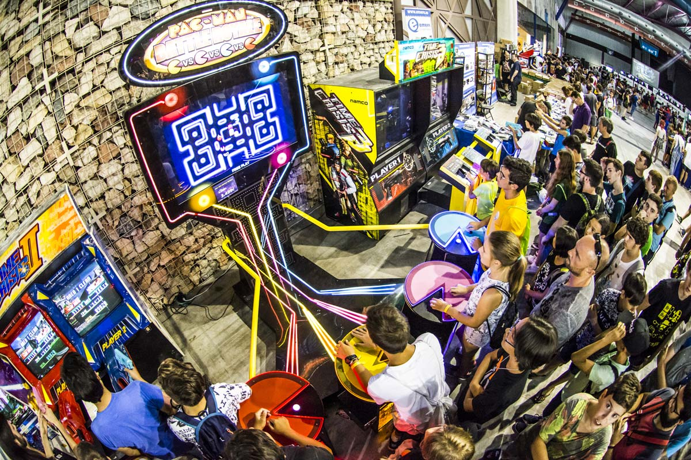

Other Imporant Games
This is a list of the most imporant arcade games, including their release year, publisher,
and what makes them so important. All information was found
here
.

- Space Invaders - Released 1978 by Taito
- Considered the first blockbuster videogame; paved the way for the rest of the industry.
- Asteroids - Released 1979 by Atari
- One of the most popular and well known games; also the first to introduce an initial-based high-score board.
- Rally-X - Released 1980 by Namco
- First game with full background music and introduced the concept of a bonus stage.
- Donkey Kong Jr. - Released 1982 by Nintendo
- Renamed the "Jumpman" from Donkey Kong to "Mario".
- Tron - Released 1982 by Bally Midway
- First video game to earn more than the film it was based on.
- Karate Champ - Released 1984 by Technos Japan
- The first player-versus-player fighting game.